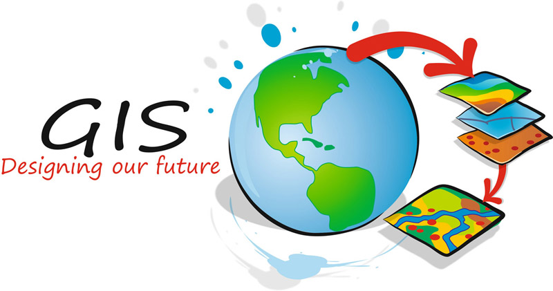

GDEV CLUB
HELLO WELCOME TO THE BEST CLUB IN DEDAN KIMATHI UNIVERSITY
Gis Developers
Information about Gdev
Before we say much about the club I would like you to know that Gdev is one of the best club you will ever find in Dekut. Gdev is an achroname of Gis Developers. It was started by one of best Gis Developer named Sam Wanjoi who is now alumni of Dekut. During those first days, it had very few members who are now expects in programming and Gis stuff. Those members are the likes of Peterson, Karanja and the rest.
To get More Information about the address and link of this group.
click hereObjectives of the club.